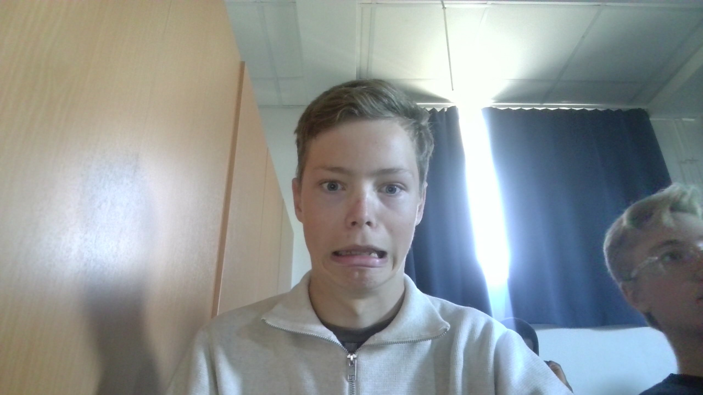

Från landsväg till mountainbike – hitta din cykelstil
MTB (Mountainbike)
Användningsområde Passar bäst i skogen, på grusvägar, stigar och teknisk terräng. Perfekt för dig som gillar äventyr och vill komma nära naturen.
Däck & hjul Breda däck med grovt mönster ger grepp på rötter, stenar och lera. Klarar ojämna underlag utan problem. Komfort & körställning
Utrustad med stötdämpning fram eller både fram och bak, vilket gör den bekväm i tuff terräng. Körställningen är mer upprätt och stabil. Träningseffekt
Ger styrka, balans och teknik i varierad miljö. Farten är lägre, men du får mycket helkroppsträning. Frihet & känsla
Ger en känsla av frihet att kunna ta sig fram nästan överallt – från skogsstigar till fjällvägar.
Landsvägscykel
Användningsområde Utformad för asfalt och långa sträckor. Perfekt för dig som vill cykla snabbt, långt och jämnt på vägarna.
Däck & hjul Smala och släta däck minskar rullmotståndet. Ger hög fart och effektivitet på släta ytor, men är känsligare för hål och ojämnheter.
Komfort & körställning Styv ram utan stötdämpning för att all kraft ska gå till farten. Körställningen är framåtlutad och aerodynamisk – effektiv men kan kännas mindre bekväm på längre turer för ovana.
Träningseffekt Ger uthållighet och kondition i hög fart. Perfekt för dig som vill pressa dig själv på längre rundor och få in många mil.
Frihet & känsla Ger känslan av fart, flyt och lätthet. Att cykla i klunga på landsvägen kan också vara en social upplevelse.

Den väldigt sexiga personen som har gjort hesidan (Han är redan tagen tyvärr)